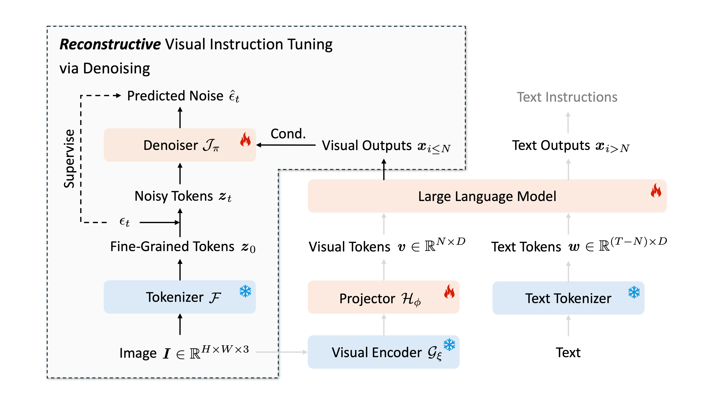
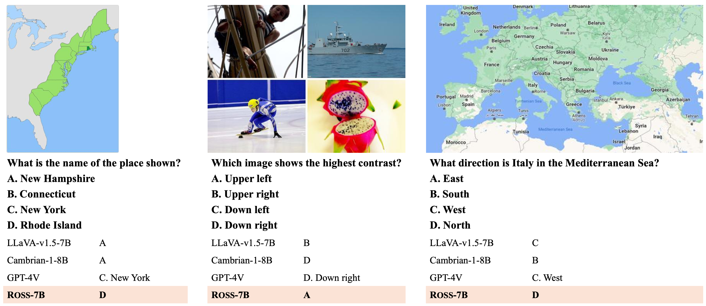
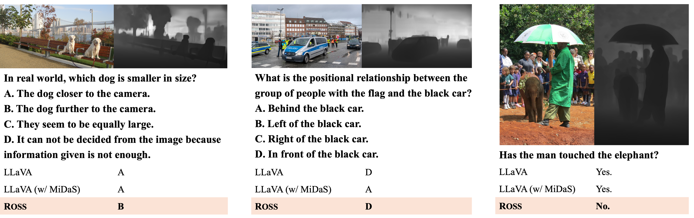
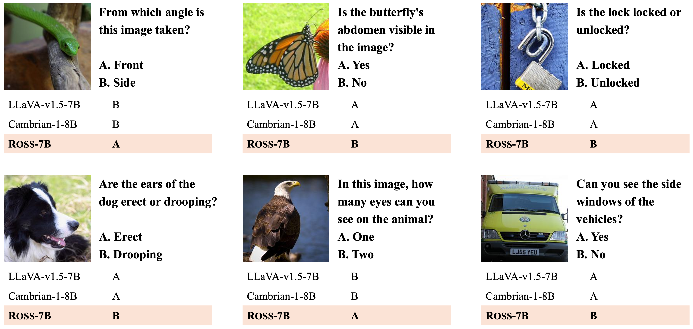
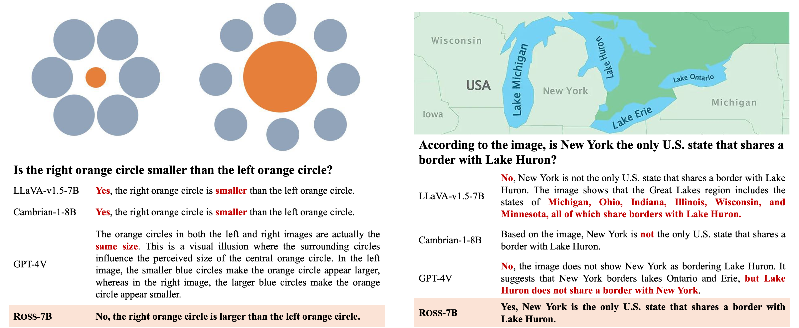

<!DOCTYPE html>
<html>

<head>
  <meta charset="utf-8">
  <meta name="description" content="Reconstructive Visual Instruction Tuning">
  <meta name="viewport" content="width=device-width, initial-scale=1">
  <title>Reconstructive Visual Instruction Tuning</title>

  <!-- Global site tag (gtag.js) - Google Analytics -->
  <script async src="https://www.googletagmanager.com/gtag/js?id=G-1PXPLJH1FH"></script>
  <script>
    window.dataLayer = window.dataLayer || [];

    function gtag() {
      dataLayer.push(arguments);
    }

    gtag('js', new Date());

    gtag('config', 'G-1PXPLJH1FH');
  </script>

  <link href="https://fonts.googleapis.com/css?family=Google+Sans|Noto+Sans|Castoro" rel="stylesheet">

  <link rel="stylesheet" href="./static/css/bulma.min.css">
  <link rel="stylesheet" href="./static/css/bulma-carousel.min.css">
  <link rel="stylesheet" href="./static/css/bulma-slider.min.css">
  <link rel="stylesheet" href="./static/css/fontawesome.all.min.css">
  <link rel="stylesheet" href="https://cdn.jsdelivr.net/gh/jpswalsh/academicons@1/css/academicons.min.css">
  <link rel="stylesheet" href="./static/css/index.css">
  <link rel="icon" href="./static/images/favicon.svg">

  <script src="https://ajax.googleapis.com/ajax/libs/jquery/3.5.1/jquery.min.js"></script>
  <script defer src="./static/js/fontawesome.all.min.js"></script>
  <script src="./static/js/bulma-carousel.min.js"></script>
  <script src="./static/js/bulma-slider.min.js"></script>
  <script src="./static/js/index.js"></script>
  <script id="MathJax-script" async src="https://cdn.jsdelivr.net/npm/mathjax@3/es5/tex-mml-chtml.js">
</script>
</head>

<body>


  <section class="hero">
    <div class="hero-body">
      <div class="container is-max-desktop">
        <div class="columns is-centered">
          <div class="column has-text-centered">
            <h1 class="title is-3 publication-title">Reconstructive Visual Instruction Tuning</h1>
            <div class="is-size-5 publication-authors">
              <span class="author-block">
                <a href="https://haochen-wang409.github.io/">Haochen Wang</a><sup>1,2</sup></span> &#20
              <span class="author-block">
                <a href="https://yexiguafuqihao.github.io/">Anlin Zheng</a><sup>3</sup></span> &#20
              <span class="author-block">
                <a href="">Yucheng Zhao</a><sup>4</sup></span> &#20
              <span class="author-block">
                <a href="">Tiancai Wang</a><sup>4</sup></span> &#20
              <span class="author-block">
                <a href="">Zheng Ge</a><sup>5</sup></span>
            </div>
            <div class="is-size-5 publication-authors">
              <span class="author-block">
                <a href="">Xiangyu Zhang</a><sup>4,5</sup></span> &#20
              <span class="author-block">
                <a href="">Zhaoxiang Zhang</a><sup>1,2,6</sup></span>
            </div>

            <div class="is-size-5 publication-authors">
              <span class="author-block"><sup>1</sup> Institute of Automation, Chinese Academy of Sciences</span>
            </div>
            <div class="is-size-5 publication-authors">
              <span class="author-block"><sup>2</sup> University of Chinese Academy of Sciences</span>
            </div>
            <div class="is-size-5 publication-authors">
              <span class="author-block"><sup>3</sup> University of Hong Kong</span> &#20 &#20
              <span class="author-block"><sup>4</sup> MEGVII Technology</span> &#20 &#20
              <span class="author-block"><sup>5</sup> StepFun</span>
            </div>
            <div class="is-size-5 publication-authors">
              <span class="author-block"><sup>6</sup> Centre for Artificial Intelligence and Robotics, Hong Kong Institute of Science & Innovation, CAS</span>
            </div>

            <div class="column has-text-centered">
              <div class="publication-links">
                <span class="link-block">
                  <a href="https://arxiv.org" class="external-link button is-normal is-rounded is-dark">
                    <span class="icon">
                      <i class="ai ai-arxiv"></i>
                    </span>
                    <span>arXiv</span>
                  </a>
                </span>
                <!-- Code Link. -->
                <span class="link-block">
                  <a href="https://github.com/haochen-wang409" class="external-link button is-normal is-rounded is-dark">
                    <span class="icon">
                      <i class="fab fa-github"></i>
                    </span>
                    <span>Code</span>
                  </a>
                </span>
              </div>

            </div>
            <!-- Your image here -->
            
            <h2 class="subtitle has-text-centered">
              <strong>Overview of <span style="font-variant: small-caps;">Ross</span>.</strong>
              <span style="font-variant: small-caps;">Ross</span> introduces visual guidance via denoising
              fine-grained visual tokens \(\textbf{z}_0\) conditioning on visual outputs \(\textbf{x}_{i \leq N}\).
              In this way, LMMs are required to preserve every detail of input images,
              thereby enhancing multimodal comprehension capabilities and reducing hallucinations.
            </h2>
          </div>
        </div>
      </div>
    </div>
  </section>

  <section class="section">
    <div class="container is-max-desktop">
      <!-- Abstract. -->
      <div class="columns is-centered has-text-centered">
        <div class="column is-four-fifths">
          <h2 class="title is-3">Abstract</h2>
          <div class="content has-text-justified">
            This paper introduces <b><u>r</u></b>ec<b><u>o</u></b>nstructive vi<b><u>s</u></b>ual in<b><u>s</u></b>truction tuning (<span style="font-variant: small-caps;">Ross</span>),
            a family of Large Multimodal Models (LMMs) that exploit vision-centric supervision signals.
            In contrast to conventional visual instruction tuning approaches that exclusively supervise text outputs,
            <span style="font-variant: small-caps;">Ross</span> prompts LMMs to supervise visual outputs via
            reconstructing input images. By doing so, it capitalizes on the inherent richness and detail present
            within input images themselves, which are often lost in pure text supervision.
            However, producing meaningful feedback from natural images is challenging due to the heavy spatial
            redundancy of visual signals. To address this issue, ROSS employs a denoising objective to reconstruct
            latent representations of input images, avoiding directly regressing exact raw RGB values.
            This intrinsic activation design inherently encourages LMMs to maintain image detail, thereby enhancing
            their fine-grained comprehension capabilities and reducing hallucinations.
            Empirically, <span style="font-variant: small-caps;">Ross</span> consistently brings significant
            improvements across different visual encoders and language models.
            In comparison with extrinsic assistance state-of-the-art alternatives that aggregate multiple visual experts,
            <span style="font-variant: small-caps;">Ross</span> delivers competitive performance with a single SigLIP
            visual encoder, demonstrating the efficacy of our vision-centric supervision tailored for visual outputs.
          </div>
        </div>
      </div>
      <!--/ Abstract. -->
    </div>
  </section>

  <section class="section">
      <div class="container">

          <div class="columns is-centered">
              <div class="column is-full has-text-centered content">

                  <h2 class="title is-3" id="leaderboard">Quantitative Performance</h2>
                    <div class="content has-text-justified">
                      <table>

                        <thead>
                          <tr></tr>

                          <tr>
                            <th>Method</th>
                            <th>Visual Encoder</th>
                            <th>LLM</th>
                            <th>POPE</th>
                            <th>HallusionBench</th>
                            <th>MMBench-EN</th>
                            <th>MMBench-CN</th>
                            <th>SEED-I</th>
                            <th>MMMU</th>
                            <th>MMVP</th>
                            <th>GQA</th>
                            <th>AI2D</th>
                          </tr>
                        </thead>

                        <tbody id="tabResults">

                          <tr>
                            <td><span style="font-variant: small-caps;">Ross</span>-7B</td>
                            <td>SigLIP-ViT-SO400M/14 @ 384</td>
                            <td>Qwen2-7B-Instruct</td>
                            <td>89.2</td>
                            <td>57.3</td>
                            <td>79.0</td>
                            <td>76.1</td>
                            <td>73.0</td>
                            <td>43.4</td>
                            <td>54.7</td>
                            <td>65.5</td>
                            <td>76.8</td>
                          </tr>

                          <tr>
                            <td><span style="font-variant: small-caps;">Ross</span>-13B</td>
                            <td>SigLIP-ViT-SO400M/14 @ 384</td>
                            <td>Vicuna-13B-v1.5</td>
                            <td>88.7</td>
                            <td>56.4</td>
                            <td>73.6</td>
                            <td>67.4</td>
                            <td>71.1</td>
                            <td>41.3</td>
                            <td>44.7</td>
                            <td>65.2</td>
                            <td>73.8</td>
                          </tr>

                        </tbody>
                      </table>
                    </div>

              </div>
          </div>

      </div>
  </section>

  <section class="section">
    <div class="hero-body">
      <div class="container is-max-desktop">
        <div class="columns is-centered">
          <div class="column is-full has-text-centered content">
            <h2 class="title is-3" id="qualitative">Qualitative Performance</h2>
            <p>
            
            <p>
            
            <p>
            
            <p>
            
          </div>
          </div>
        </div>
      </div>
    </div>
  </section>

  <section class="section" id="BibTeX">
    <div class="container is-max-desktop content">
      <h2 class="title">BibTeX</h2>
      <pre><code>@article{wang2024ross,
  author={Haochen Wang and Anlin Zheng and Yucheng Zhao and Tiancai Wang and Ge Zheng and Xiangyu Zhang and Zhaoxiang Zhang},
  title={Reconstructive Visual Instruction Tuning},
  journal={tbd},
  year={2024},
}</code></pre>
    </div>
  </section>


  <footer class="footer">
    <div class="container">
      <div class="columns is-centered">
        <div class="column is-8">
          <div class="content">
            <p>
              This website is adapted from <a href="https://github.com/nerfies/nerfies.github.io">Nerfies</a>, licensed
              under a <a rel="license" href="http://creativecommons.org/licenses/by-sa/4.0/">Creative Commons Attribution-ShareAlike 4.0 International License</a>.
            </p>
            <p>
              This means you are free to borrow the <a href="https://github.com/nerfies/nerfies.github.io">source code</a>
              of this website, we just ask that you link back to this page in the footer.
              Please remember to remove the analytics code included in the header of the website which
              you do not want on your website.
            </p>
          </div>
        </div>
      </div>
    </div>
  </footer>

</body>

</html>